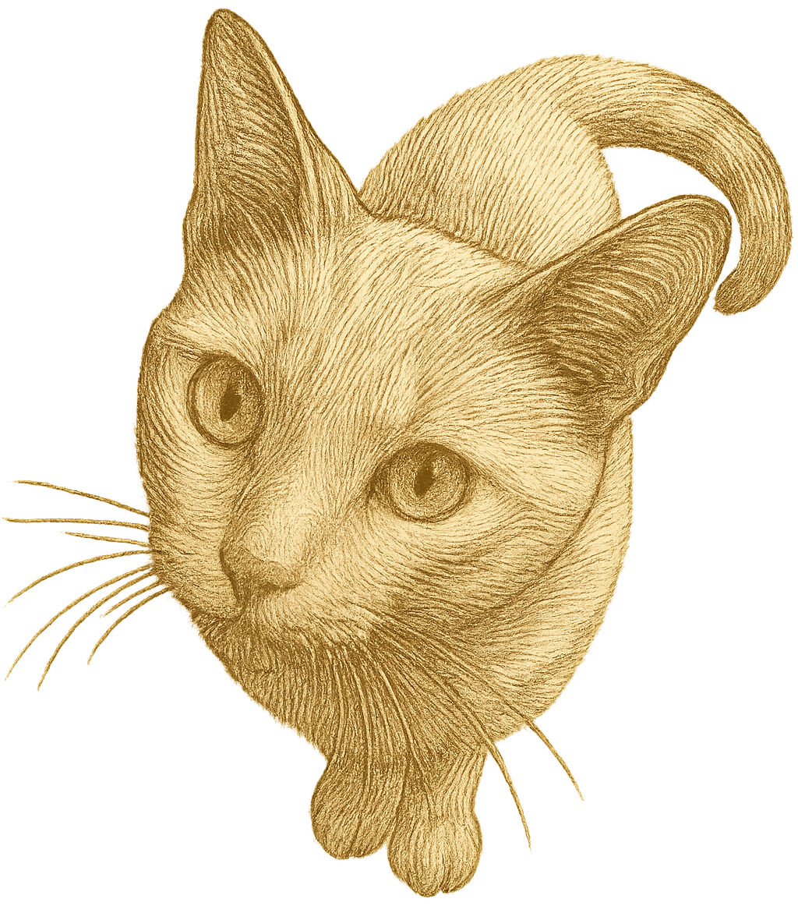

Hello, World!
I'm Mariona N. Jones, I am delighted handling partnerships at Smashing Magazine & Confs! Since 2003, I feel fortunate to be part of the web design & front-end development community.
I've also produced & curated a few education & technology events and projects. This is an homage to my always beloved cat Linus (2020-2025), an autobiographical exercise, repository & journal.

Born in 1979, I grew up between tending the machines at my grandfathers' industrial textile factory & running around the Science Museum of Barcelona.
I'm passionate about design, the web, robotics, science, and technology. I love open source software & hardware, cephalopods, fungi, biology, and —above all— research & reading.

UNIVERSITY DEGREES
- 2003-2007 B.F.A. Visual Communication Design & Art History (Southern Illinois University, Carbondale). Grade: Cum Laude.
- 2007-2010 M.Sc. Professional Media & Media Mgmt (S.I.U., Carbondale, Illinois.)
- 2018-2019 Postgraduate Science Education Evaluation & Research (ISEC Lisboa - Instituto Superior de Educação e Ciências, Portugal.)
DIPLOMAS
- 2026-2026 Autonomous & Collaborative Robotics Robot components, programming, collaborative & mobile robotics Unió Patronal Metal·lúrgica / Fdn Centre CIM
- 2015-2015 Fab Academy Digital Fabrication & Electronics Fab Lab Network / CBA-MIT
- 2000-2003 Community College John A. Logan College Grade: Honors.
CERTIFICATES
- 2026-2026 Design Patterns for AI Interfaces, by Vitaly Friedman
- 2024-2024 BerkeleyX: Psychedelics & the Mind
- 2024-2024 SmashingConf: Master UI Design